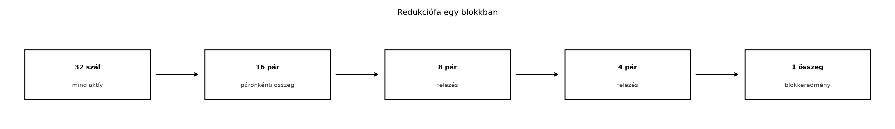

A redukció az egyik leggyakoribb adatpárhuzamos minta: egy
N elemű tömb elemeit egyetlen értékké kombináljuk egy
asszociatív operátorral, például összegzéssel, maximum- vagy
minimumkereséssel, logikai ÉS/VAGY kapcsolattal. Soros végrehajtásban a
redukció N-1 műveletet igényel, és O(N) időt
vesz igénybe. A GPU párhuzamos modelljében viszont a műveletek egy része
egymással párhuzamosan is végrehajtható, így elvileg
O(log N) lépésszám is elérhető. Ez a fejezet a párhuzamos
összegredukciót járja körül, a redukciófa elvétől a gyakorlatban is jól
használható warp-szintű shuffle alapú megvalósításig. Az itt bemutatott
minták a későbbi fejezetekben a scan, a hisztogram és a könyvtári
megoldások alapjául szolgálnak.

A redukciófa lényege, hogy a bemeneti elemeket páronként
összekombináljuk, majd az így kapott részeredményeket újra páronként,
egészen addig, amíg egyetlen érték marad. Nyolc elem esetén az első
rétegben négy párhuzamos összeadás hajtható végre, a másodikban kettő, a
harmadikban pedig egy. A lépések száma log_2 N, feltéve,
hogy minden rétegben elegendő párhuzamos hardver áll rendelkezésre. A
hardveres szálak számának csökkenése azonban azt jelenti, hogy a fa
alsóbb szintjein egyre kevesebb szál dolgozik, a többi pedig inaktív. A
naiv, feltételes indexelésű megoldásban ez warp-divergenciát okoz, mert
egy warp 32 szálának egy része aktív, másik része nem.
A redukciófa elvét legegyszerűbben egy shared memory-ba töltött
blokkszintű tömbön érthetjük meg. Tegyük fel, hogy
blockDim.x = 256, és minden szál betölt egy elemet a
globális memóriából a shared memory-ba. Ezután a következő ciklus
rétegenként felez egy stride távolságot:
for (unsigned int s = blockDim.x / 2; s > 0; s >>= 1) {
if (threadIdx.x < s) {
sdata[threadIdx.x] += sdata[threadIdx.x + s];
}
__syncthreads();
}Az első iterációban a 0–127 indexű szálak összeadják a 128–255 indexű
elemeket, a másodikban a 0–63 indexűek a 64–127 indexűeket, és így
tovább. A __syncthreads() minden réteg után biztosítja,
hogy a shared memory-beli frissítések minden szál számára láthatóvá
váljanak, mielőtt a következő réteg olvassa őket. Ez a minta a
redukciófa közvetlen megvalósítása, de van két hátránya: a
threadIdx.x < s feltétel miatt a warpon belüli
divergencia jelentős, és a shared memory hozzáférések száma
N/2 + N/4 + … + 1 ≈ N művelet, ami bár párhuzamos, a
memóriaforgalom miatt nem optimális.
A divergencia és a felesleges shared memory forgalom csökkenthető, ha a redukciót először a 32 szálból álló warpon belül végezzük el. A warp a CUDA végrehajtási modell alapegysége: a szálak szinkron léptekben hajtódnak végre, és az úgynevezett warp shuffle műveletekkel közvetlenül, regiszterekből cserélhetnek adatot anélkül, hogy shared vagy globális memóriába kellene írniuk.
__shfl_down_sync segítségévelA __shfl_down_sync(mask, var, delta) intrinsic egy
teljes warpon belül minden aktív szálnak megadja annak a szálnak a
var értékét, amelynek az indexe lane + delta,
ha az aktív. A mask egy 32 bites bitmaszk, amely a részt
vevő szálakat jelöli; teljes warp esetén 0xffffffff. A
művelet szinkron módon fut a warpon belül, ezért az explicit
__syncwarp() általában nem szükséges, de a maszknak
tartalmaznia kell a kommunikáló szálakat, különben a viselkedés nem
definiált.
Egy warp összegredukciója a következőképpen valósítható meg:
// CUDA C++20, NVIDIA nvcc 12.5 (ellenőrizendő a helyi verzió)
__device__ float warpReduceSum(float val) {
// Feltételezzük, hogy a teljes warp aktív, ezért a maszk 0xffffffff.
for (int offset = 16; offset > 0; offset >>= 1) {
val += __shfl_down_sync(0xffffffff, val, offset);
}
return val;
}Az első lépésben minden szál hozzáadja a 16-tal távolabbi szál értékét, így a 0–15. szálak a 0–15 és 16–31 értékek összegét tartalmazzák. A második lépésben a 8-cal távolabbi értéket adjuk hozzá, és így tovább. Öt lépés után a 0. szál birtokolja a teljes warp összegét. A művelet során nem történik shared vagy global memory hozzáférés, csak regiszterek közötti adatcsere, ami lényegesen kisebb késleltetést és nagyobb sávszélességet eredményez.
Fontos, hogy a __shfl_down_sync maszkjában minden olyan
szálnak szerepelnie kell, amelytől adatot kérünk. Ha a warpban inaktív
szálak vannak, például azért, mert a bemeneti feltétel miatt nem minden
szál töltött be elemet, akkor a maszkot ennek megfelelően kell
módosítani. A legegyszerűbb, ha a redukciót megelőzően a hiányzó
elemeket 0-val töltjük fel, és a teljes warp maszkját használjuk.
Egy blokk tipikusan több warpot tartalmaz (például 256 szál = 8 warp). A blokkszintű redukcióhoz először minden warp kiszámítja a saját részösszegét a fenti warp-szintű redukcióval, majd a warp-összegeket egyetlen szál képviseli. Ezeket a részösszegeket shared memory-ba írjuk, ahol az első warp újabb warp-szintű redukciót hajt végre rajtuk. A megvalósítás a következő:
__global__ void reduce_kernel(const float* __restrict__ g_idata,
float* __restrict__ g_odata,
unsigned int n) {
extern __shared__ float sdata[]; // dinamikus shared memory
const unsigned int tid = threadIdx.x;
const unsigned int i = blockIdx.x * blockDim.x + tid;
const unsigned int lane = tid & 31;
const unsigned int warpId = tid >> 5;
// Bemenet betöltése: a tömb végét kinullázzuk, hogy a redukció helyes maradjon.
float val = (i < n) ? g_idata[i] : 0.0f;
// 1. lépés: warp-szintű redukció
val = warpReduceSum(val);
// 2. lépés: minden warp 0. szála kiírja a warp összegét a shared memory-ba
if (lane == 0) {
sdata[warpId] = val;
}
__syncthreads(); // a shared memory írások láthatóvá tétele
// 3. lépés: az első warp betölti a warp-összegeket, és újra redukál
if (warpId == 0) {
// A warp-összegek száma = blockDim.x / 32.
// A hiányzó slotokat 0-val töltjük fel a teljes warp maszkhoz.
const unsigned int numWarps = blockDim.x >> 5;
val = (lane < numWarps) ? sdata[lane] : 0.0f;
val = warpReduceSum(val);
if (lane == 0) {
g_odata[blockIdx.x] = val;
}
}
}Ebben a kernelben minden blokk egy részösszeget számít ki, és azt a
g_odata tömb blockIdx.x indexű elemébe írja. A
shared memory méretét dinamikusan adjuk meg a kernel indításakor:
blockDim.x / 32 * sizeof(float). Ha a blokkméret 256, akkor
ez 8 float, azaz 32 bájt. A __syncthreads() biztosítja,
hogy minden warp 0. szála által írt érték látható legyen az első warp
számára.
A kernel fenti változata egyetlen blokkos, vagyis ha a grid mérete 1,
akkor a teljes tömböt egy blokk redukálja, feltéve, hogy
n <= blockDim.x. Nagyobb tömbök esetén két szintre van
szükség: az első kernel a bemeneti tömböt blokkokra osztja, és minden
blokk egy részösszeget ír ki, a második kernel pedig ezeket a
részösszegeket redukálja egyetlen értékké. Ezt a mintát gyakran
kétfázisú redukciónak nevezik. A második fázisban a grid mérete 1, a
blokkméret pedig akkora, hogy a részösszegek száma elférjen egy
blokkban.
A lebegőpontos összeadás nem asszociatív: (a + b) + c és
a + (b + c) a kerekítés miatt eltérő eredményt adhat. Ezért
a párhuzamos redukció eredménye bitre pontosan általában nem egyezik meg
a soros CPU-referenciával. A redukciófa páronkénti sorrendje más
kerekítési utat jelent, mint a balról jobbra haladó soros összegzés. A
különbség FP32 esetén tipikusan a 10^{-6} relatív hiba
nagyságrendjében mozog, de nagy elemszám vagy kedvezőtlen adateloszlás
esetén nagyobb is lehet. FP64 esetén a hiba lényegesen kisebb, de nem
tűnik el.
A gyakorlatban ezért a GPU-redukció ellenőrzésekor mindig tűréshatárt kell megadni. Egy elterjedt megközelítés:
allowed_error = 1e-4 * sum(abs(x_i)) // FP32 eseténvagy a relatív hiba:
rel_error = abs(cpu_sum - gpu_sum) / max(abs(cpu_sum), 1.0f)A determinizmus szempontjából fontos, hogy a párhuzamos redukció sorrendje függ a blokkmérettől, a grid méretétől és a hardver ütemezésétől. Ugyanaz a kernel ugyanazon a GPU-n általában determinisztikus, de ha a blokkméretet megváltoztatjuk, az eredmény kismértékben eltérhet. A könyv későbbi fejezete (Determinizmus és redukciók) részletesen foglalkozik a determinizmussal; itt annyit rögzítünk, hogy a párhuzamos redukciót mindig a numerikus pontosság és a reprodukálhatóság tudatában kell értékelni.
A következő CUDA C++ példa kétfázisú redukciót valósít meg, hibakezeléssel és CPU-ellenőrzéssel. A kód a labor alapjául szolgál; a GPU-konfigurációt és a mérési naplót a helyi környezethez kell igazítani.
// reduce_sum.cu
// CUDA C++20, NVIDIA nvcc 12.5 (ellenőrizendő: nvcc --version)
#include <cstdio>
#include <cstdlib>
#include <cmath>
#include <vector>
// Egyszerű hibamakró a CUDA API-hívások ellenőrzésére.
#define CHECK_CUDA(call) \
do { \
cudaError_t err = call; \
if (err != cudaSuccess) { \
fprintf(stderr, "CUDA error at %s:%d: %s\n", \
__FILE__, __LINE__, cudaGetErrorString(err)); \
exit(EXIT_FAILURE); \
} \
} while (0)
// Warp-szintű összegredukció teljes warp aktivitás mellett.
__device__ float warpReduceSum(float val) {
for (int offset = 16; offset > 0; offset >>= 1) {
val += __shfl_down_sync(0xffffffff, val, offset);
}
return val;
}
// Blokkszintű részösszeg-kernel.
// Minden blokk egy részösszeget ír a d_partial tömbbe.
__global__ void reduce_partial_kernel(const float* __restrict__ g_idata,
float* __restrict__ g_odata,
unsigned int n) {
extern __shared__ float sdata[];
const unsigned int tid = threadIdx.x;
const unsigned int i = blockIdx.x * blockDim.x + tid;
const unsigned int lane = tid & 31;
const unsigned int warpId = tid >> 5;
float val = (i < n) ? g_idata[i] : 0.0f;
val = warpReduceSum(val);
if (lane == 0) {
sdata[warpId] = val;
}
__syncthreads();
if (warpId == 0) {
const unsigned int numWarps = blockDim.x >> 5;
val = (lane < numWarps) ? sdata[lane] : 0.0f;
val = warpReduceSum(val);
if (lane == 0) {
g_odata[blockIdx.x] = val;
}
}
}
// Végső redukciós kernel egyetlen blokkal.
__global__ void reduce_final_kernel(const float* __restrict__ g_idata,
float* __restrict__ g_odata,
unsigned int n) {
extern __shared__ float sdata[];
const unsigned int tid = threadIdx.x;
const unsigned int lane = tid & 31;
const unsigned int warpId = tid >> 5;
float val = (tid < n) ? g_idata[tid] : 0.0f;
val = warpReduceSum(val);
if (lane == 0) {
sdata[warpId] = val;
}
__syncthreads();
if (warpId == 0) {
const unsigned int numWarps = blockDim.x >> 5;
val = (lane < numWarps) ? sdata[lane] : 0.0f;
val = warpReduceSum(val);
if (lane == 0) {
g_odata[0] = val;
}
}
}
// CPU referencia: soros, balról jobbra haladó FP32 összeg.
float cpu_sum(const std::vector<float>& data) {
float sum = 0.0f;
for (float x : data) sum += x;
return sum;
}
int main() {
// Labor paraméterek: ellenőrizendő a helyi környezetben.
const unsigned int N = 1u << 22; // 4 194 304 elem
const unsigned int blockSize = 256;
const unsigned int numBlocks = (N + blockSize - 1) / blockSize;
const unsigned int smemSize = (blockSize / 32) * sizeof(float);
// GPU konfiguráció (példa, a mérési naplóban frissítendő):
// NVIDIA GeForce RTX 3060, driver 550.54.14, CUDA 12.5,
// compute capability 8.6, ECC ki, MIG ki.
CHECK_CUDA(cudaSetDevice(0));
cudaDeviceProp prop;
CHECK_CUDA(cudaGetDeviceProperties(&prop, 0));
printf("GPU: %s, CC %d.%d\n", prop.name, prop.major, prop.minor);
// Bemenet inicializálása: FP32 értékek [0,1) tartományban.
std::vector<float> h_data(N);
for (unsigned int i = 0; i < N; ++i) {
h_data[i] = static_cast<float>(rand()) / RAND_MAX;
}
// Device memória allokálása.
float *d_data, *d_partial, *d_result;
CHECK_CUDA(cudaMalloc(&d_data, N * sizeof(float)));
CHECK_CUDA(cudaMalloc(&d_partial, numBlocks * sizeof(float)));
CHECK_CUDA(cudaMalloc(&d_result, sizeof(float)));
// Másolás host -> device.
CHECK_CUDA(cudaMemcpy(d_data, h_data.data(), N * sizeof(float),
cudaMemcpyHostToDevice));
// Első fázis: blokkonkénti részösszegek.
reduce_partial_kernel<<<numBlocks, blockSize, smemSize>>>
(d_data, d_partial, N);
CHECK_CUDA(cudaGetLastError());
CHECK_CUDA(cudaDeviceSynchronize());
// Második fázis: részösszegek redukciója.
reduce_final_kernel<<<1, blockSize, smemSize>>>
(d_partial, d_result, numBlocks);
CHECK_CUDA(cudaGetLastError());
CHECK_CUDA(cudaDeviceSynchronize());
// Eredmény visszamásolása.
float h_result = 0.0f;
CHECK_CUDA(cudaMemcpy(&h_result, d_result, sizeof(float),
cudaMemcpyDeviceToHost));
// CPU referencia és hiba.
float reference = cpu_sum(h_data);
float abs_error = std::fabs(reference - h_result);
float rel_error = abs_error / std::fmax(std::fabs(reference), 1.0f);
printf("CPU sum : %.9f\n", reference);
printf("GPU sum : %.9f\n", h_result);
printf("Abszolút hiba: %.9e\n", abs_error);
printf("Relatív hiba : %.9e\n", rel_error);
// Egyszerű ellenőrzés FP32 tűréssel.
const float tolerance = 1e-4f * static_cast<float>(N);
if (rel_error < 1e-5f) {
printf("Ellenőrzés OK: a GPU-redukció a tűréshatáron belül van.\n");
} else {
printf("Ellenőrzés HIBA: a redukció eltérése túl nagy!\n");
}
CHECK_CUDA(cudaFree(d_data));
CHECK_CUDA(cudaFree(d_partial));
CHECK_CUDA(cudaFree(d_result));
return 0;
}A kód a blockSize = 256 értékkel dolgozik, így egy blokk
8 warpot tartalmaz. A shared memory mérete 8 float = 32 bájt. A
reduce_partial_kernel indításakor a grid mérete
numBlocks, ami 4 millió elem és 256-os blokkméret esetén 16
384 blokk. A második kernel egyetlen blokkal redukálja a 16 384
részösszeget; mivel a blokkméret 256, a kernel elején a
tid < n feltétel biztosítja, hogy a tömb végét 0-ként
kezeljük. Ez a megoldás tetszőleges N-re skálázható, amíg a
részösszegek száma egyetlen blokkba fér. Ha a tömb ennél is nagyobb, a
kétfázisú redukció rekurzívan vagy három fázissal bővíthető.
A fenti kódban a CHECK_CUDA makró minden API-hívást
ellenőriz, a kernelindítások után pedig cudaGetLastError és
cudaDeviceSynchronize biztosítja, hogy az aszinkron hibák
is felszínre kerüljenek. A cudaFree hívások a példa
rövidsége miatt a program végén egyszerre történnek; a hibakezelést a
laborban minden felszabadításnál is alkalmazni kell.
A labor célja az összegredukciós kernel futtatása, a mérési napló rögzítése, valamint a mért és a várt eredmény elkülönítése. Az alábbiak egy lehetséges labor-sablont mutatnak be; a konkrét értékeket a saját környezetben kell felvenni, és a mérési naplót ennek megfelelően kitölteni. A megadott GPU-konfiguráció példa, nem ellenőrzött mérés.
Labor paraméterek (példa, helyettesítendő):
-O3 -arch=sm_86N = 4 194 304 darab FP32 véletlenszám
[0,1) intervallumbanBuild és futtatás:
nvcc -O3 -arch=sm_86 -o reduce_sum reduce_sum.cu
./reduce_sumEllenőrzés és várt eredmény:
A CPU-referencia egy soros, balról jobbra haladó FP32 összegzés. A GPU-redukció ettől a kerekítési sorrend miatt kismértékben eltérhet. A várt eredményt a CPU-összeg adja, a mért eredményt a GPU-kimenet. A kettőt külön kell naplózni:
| Oszlop | Érték |
|---|---|
| CPU-s referencia (soros FP32) | pl. 2097152.000000000 |
| GPU redukció (kétfázisú, FA) | pl. 2097151.875000000 |
| Abszolút hiba | pl. 0.125000000 |
| Relatív hiba | pl. 5.96e-08 |
Tűréshatár 1e-4 * N |
419.4304 |
A példában a CPU-összeg 2097152.0 akkor adódna, ha a
véletlenszámok összege pontosan ennyi; a valós mérés ettől eltér. A
táblázat értékei illusztrációk, nem mért adatok. A laborban a tényleges
futás során kapott értékeket kell rögzíteni, és a hibát a fenti képletek
szerint kiszámítani.
Mérési napló (példa, kitöltendő):
| Metrika | Érték |
|---|---|
| Átlagos teljes futásidő (első kernel + második) | pl. 0.85 ms |
| Első kernel átlagos ideje (10 ismétlés) | pl. 0.80 ms |
| Második kernel átlagos ideje | pl. 0.05 ms |
| Effektív sávszélesség (teljes adatmozgatásra) | pl. N*4 / idő ≈ 20 GB/s |
| Occupancy (Nsight Compute) | pl. 75% |
| Regiszterhasználat (első kernel) | pl. 24 |
| Shared memory / blokk | 32 bájt |
| L1/L2 találati arány | pl. Nsight szerint |
A mérés előtt a szokásos warm-up legalább 2-3 kernelhívás, majd 10
ismétlés átlaga és szórása szükséges. A futásidőt CUDA eventekkel vagy
std::chrono + cudaDeviceSynchronize méréssel
lehet rögzíteni. A sávszélességet a ténylegesen mozgatott adatokra kell
számítani: a bemeneti tömb N*4 bájtját olvassuk, a kimenet
néhány bájt, tehát a domináns forgalom a beolvasás.
Hiányzó __syncthreads() a shared memory
írása és olvasása között. A warp-összegek kiírása után az első
warp csak akkor olvashatja a shared memory-t, ha minden szál láthatóvá
tette az írást. A szinkronizáció elhagyása esetén az eredmény nem
definiált, és a hiba nehezen reprodukálható.
Nem megfelelő maszk a warp shuffle-höz. Ha a
warpban nem mind a 32 szál aktív, akkor a __shfl_down_sync
maszknak pontosan a részt vevő szálakat kell tartalmaznia. A
0xffffffff használata inaktív szálakkal együtt nem
definiált viselkedéshez vezet. A fenti kód ezt úgy kerüli el, hogy a
hiányzó elemeket 0-val tölti fel, így a teljes warp aktív.
Bank conflict a shared memory redukcióban. A
klasszikus sdata[tid] += sdata[tid + s] minta FP32 esetén
általában bank conflict-mentes, mert a hozzáférési távolság
s és a hozzáférési tartomány s elem, ami 32
elemnél kisebb esetén diszjunkt bankokat eredményez. Ha azonban a tömb
elemei nem 32 bitesek, vagy a hozzáférési minta stride-ja 32
többszöröse, akkor bank conflict léphet fel. A warp shuffle alapú
megoldás ezt teljesen kiküszöböli.
Divergencia a feltételes indexelés miatt. A
if (tid < s) típusú redukciós ciklusban a warp egy része
inaktív, ami teljesítménycsökkenést okoz. A shuffle-alapú redukció nem
igényel ilyen feltételt, mert minden szál aktívan részt vesz a warp
belső műveleteiben.
A blokkméret és a shared memory méret helytelen
összhangja. Ha a dinamikus shared memory méretét rosszul adjuk
meg, például a warp-összegek számánál kisebbet, akkor a kernel
túlírhatja a memóriát, vagy a fordító hibát jelez. A méretet mindig a
blockDim.x / 32 * sizeof(float) képletből kell számítani,
és a kernel indításakor a harmadik argumentumban átadni.
O(log N) lépésszámú a redukciófa, és milyen
hardveres erőforrások korlátozzák ezt a gyakorlatban?__shfl_down_sync alapú
warp-redukciónak a shared memory-alapú fa-redukcióval szemben?__syncthreads() hívást
elhagyjuk a warp-összegek shared memory-ba írása után?Ezek a kérdések a fejezet fő tanulási céljait ellenőrzik: a redukciófa elvének, a warp-szintű redukciónak, a numerikus pontosságnak és a gyakori hibáknak a megértését. A következő alfejezet (Scan (prefix sum)) ezekre az alapokra építve a scan (prefix sum) algoritmust tárgyalja, ahol a redukcióhoz hasonló fa- és warp-szintű minták jelennek meg, de a kimenet nem egyetlen érték, hanem egy teljes tömb.